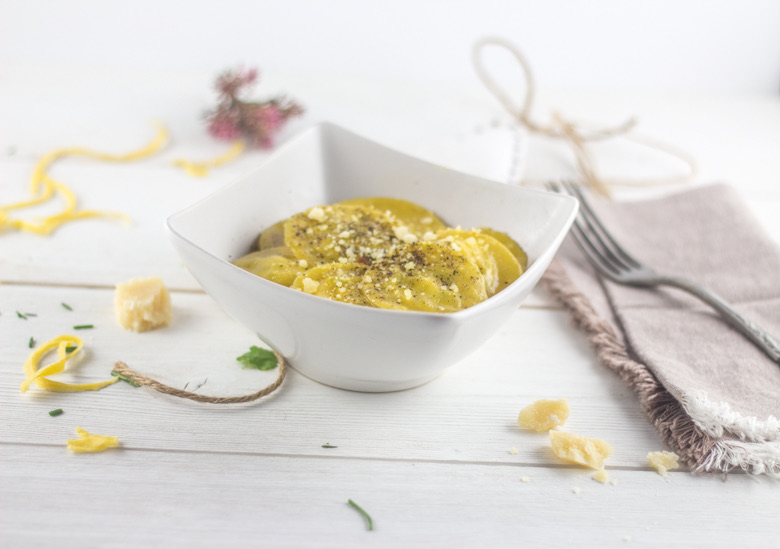
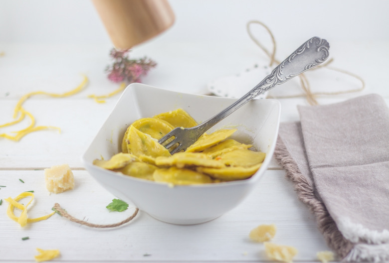

Raviolis maison un peu de brousse et le reste

Aujourd’hui on se retrouve pour une délicieuse recette de raviolis fait maison fourrés au fromage et aux cardons
Depuis que j’ai été gâtée au Noël dernier je n’avais qu’une envie c’était de tester la recette de pâte de Guy Grossi. Quand j’ai lu que pour 500g de farine il fallait deux œufs et douze jaunes j’ai pensé waouh j’en étais bien loin avec ma loi du « 100g de farine par œufs »! Je me suis aussi dit que j’avais peut être enfin trouvé le moyen de retrouver le goût des pâtes que nous avions mangé lors de notre séjour en Italie.
Je me suis alors mis en tête de faire des raviolis maison et vu qu’il me restait un bocal de cardons à utiliser j’ai sauté sur l’occasion.
Pour ceux qui ne connaissent pas le cardon, il s’agit d’un des plus ancien légume qui existe. Son goût s’apparente à celui de l’artichaut et il ressemble comme deux gouttes d’eau aux côtes de blettes. Le bocal de cardons que je gardais précieusement sur mes étagères provient de la maison Malartre, entreprise familiale Lyonnaise chez qui j’ai eu la chance de me rendre afin de visiter leur usine de production (article ici).
Mes raviolis maison sont donc garnis ici de cardons mais aussi de brousse (fromage à la pâte blanche de chèvre ou de brebis), de ricotta, de ciboulette et d’un peu de coriandre le tout servi avec une délicieuse sauce au beurre. En ce qui concerne les raviolis oui je confirme je pense enfin avoir trouvé la bonne pâte à pâte même si je compte faire encore deux trois autres essais. J’appréhendais un petit peu le retour de mon chéri sur le plat vu qu’il n’aime pas trop les légumes mais finalement ce fut une réussite à tel point que les raviolis que j’avais prévu de congeler ce sont retrouvés dans son assiette (et la mienne aussi^^) pour un deuxième service!
Si vous n’avez pas de cardons vous pouvez les remplacer par des côtes de blettes par exemple ça fera très bien l’affaire! J’espère que la recette vous plaira, je vous laisse maintenant la découvrir!
Recette inspirée d’Anne-Sophie Pic
Ingrédients
- Cardons - 300g
- Echalotes - 2
- Bouillon de légumes - 80ml
- Ricotta - 80g
- Brousse de chèvre ou de brebis - 80g
- Ciboulette - 1/4 de botte
- Coriandre - 1/4 de botte
- sel, poivre
- Huile d'olive
- Farine - 500g
- Oeufs - 2
- Jaune d'oeufs - 12
- Sel - 8g
- Beurre - 35g
- Beurre froid - 20 g
- Bouillon de légumes - 250ml
Instructions
- Dans le bol de votre robot, verser la farine et le sel
- Ajouter les œufs et les jaunes
- A l'aide du crochet mélanger la pâte jusqu’à obtenir une boule de pâte homogène Si vous n'avez pas de robot : Verser la farine et le sel sur votre plan de travail, creuser un puit, verser les œufs et les jaunes et à l'aide d'une fourchette mélanger en ramenant progressivement la farine. Former une boule et continuer à pétrir à la mais jusqu'à obtenir quelque chose d'homogène et d'élastique
- Enrouler la pâte dans du film alimentaire et placer la au frais minimum deux heures
- Vous pouvez aussi la préparer la veille pour le lendemain (ça fait gagner du temps!!)
- Une fois la pâte reposée couper la en 4 morceaux
- Passer la pâte au laminoir
- Répéter l'opération au moins quatre ou cinq fois au cran 1 en la repliant plusieurs fois sur elle même afin d'obtenir une pâte bien lisse et de bonne largeur
- Passer la ensuite à chaque cran environ deux fois / trois fois jusqu’à obtenir l’épaisseur de pâte souhaitée (sur ma machine je suis allée jusqu'au cran 6)
- Laissez les maintenant sécher (le temps de séchage varie suivant plusieurs paramètres: l'humidité ambiante, la chaleur de vote pièce etc... Je ne peux donc pas être plus précise )
- Éplucher les échalotes et hachez les en petits morceaux
- Faites les confire à feu doux avec un peu d'huile d'olive pendant 10 min en remuant de temps en temps. Réserver
- Couper en petits dés les cardons et faites les cuire avec un peu d'huile d'olive pendant 5 minutes à feu doux
- Verser le bouillon de légumes et laisser cuire encore 5 bonnes minutes. Réserver
- Dans un grand bol verser le fromage et les herbes aromatiques
- Égoutter le surplus de jus de cuisson des cardons et ajoutez les aux fromages
- Ajouter les échalotes au mélange et remuer
- A l'aide d'un emporte-pièce (j'ai utilisé le bouchon de mes vitamines) découper des cercles dans la pâte à raviolis
- Disposer de la farce au centre de la moitié des cercles
- Avec l'autre moitié des cercles de pâte, recouvrir la farce
- Appuyer sur les bords afin que les raviolis soient bien fermés tout en chassant l'air
- Dans une grande poêle faire chauffer du beurre et y faire revenir les raviolis en les retournant très délicatement pour les dorer des deux cotés
- Au bout de 2 minutes verser le bouillon de légumes et porter à ébullition
- Laisser cuire environ 5 minutes (vérifier la cuisson régulièrement)
- En fin de cuisson ajouter des morceaux de beurre très froid
- Égoutter le surplus de bouillon si vous en avez et servez immédiatement


Les tips de la communauté
Recette qui séduit par son originalité avec la brousse et le cardon. Les commentaires soulignent le côté gourmand et l'attrait de faire des raviolis maison, mais notent que c'est une recette longue à préparer.
Astuces
- Les raviolis maison sont meilleurs que ceux du commerce mais demandent du temps
- Utiliser des blettes comme alternative au cardon selon la saison
- L'association brousse-cardon est délicieuse
- Le pliage des raviolis est l'étape principale mais réalisable
Variantes suggérées
- Remplacer le cardon par des blettes en hiver/printemps
- Ajouter des noix pour plus de croquant et de saveur
- Modifier la farce selon les légumes de saison disponibles
Ajustements signalés
- Le temps de préparation est important, prévoir plusieurs heures pour toute la recette